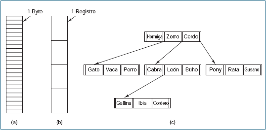
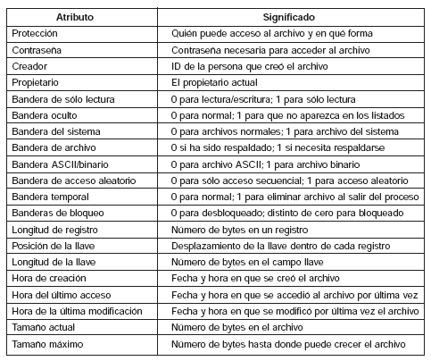
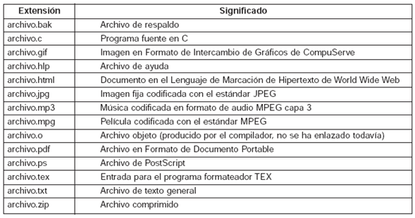

Estructura y Tipos de Archivos en Sistemas Operativos
4.1 Estructura del sistema de archivos
Según Tanenbaum (2009), la estructura del sistema de archivos es una organización jerárquica basada en directorios que usa inodos para almacenar los metadatos de los archivos, con una tabla de inodos que permite gestionar los archivos de manera eficiente. Los bloques de datos almacenan la información de los archivos, y el acceso a estos datos se realiza a través de las estructuras de directorios.
Nomenclatura de archivos
Tanenbaum (1998) define la nomenclatura de archivos como el sistema mediante el cual los archivos son nombrados, gestionados y accedidos en un sistema de archivos. Un nombre de archivo es una cadena alfanumérica utilizada para identificarlo en el directorio, pero no contiene información sobre su ubicación física.
Características clave:
Ruta de archivo: Puede ser absoluta (desde la raíz) o relativa (desde el directorio actual)
Inodos: Almacenan metadatos pero no el nombre del archivo
Directorios: Estructuras que vinculan nombres de archivos con sus inodos
Convenciones: Longitud del nombre, extensiones para tipos de archivo, distinción mayúsculas/minúsculas
Organización: Jerarquía de directorios en forma de árbol
Estructura de archivos
Tanenbaum (1998) describe la estructura de archivos mediante los siguientes componentes principales:
Componente
Descripción
Inodos (Inodes)
Estructuras que almacenan metadatos (tamaño, fechas, permisos, ubicación de bloques)
Directorio (Directory)
Lista de nombres de archivos y sus referencias a inodos
Superbloque (Superblock)
Información crítica sobre el sistema de archivos (tamaño total, bloques libres, etc.)
Bloques de Datos
Unidades donde se guardan los datos reales de los archivos
Estructura Jerárquica
Organización en árbol desde la raíz del sistema
Caché
Almacenamiento temporal para mejorar rendimiento
Tipos de Archivos
Tres estructuras básicas de archivos

Figura 1. Tres tipos de archivos: (a) Secuencia de bytes, (b) Secuencia de registros, (c) Árbol (Tanenbaum, 2009, p. 259)
Clasificación funcional
Tanenbaum describe tres tipos principales:
1. Archivos de Datos
Contienen información para usuarios o aplicaciones
Ejemplos: .txt, .jpg, .mp3
Características: Accesibles, modificables según permisos
2. Archivos de Programa
Contienen código ejecutable
Ejemplos: .exe, .bin
Características: Permisos de ejecución
3. Archivos Especiales
Representan dispositivos físicos o recursos del sistema
Ejemplos: /dev/sda, /dev/tty
Características: Acceso mediante llamadas al sistema
Tipos en UNIX y Windows
Tanenbaum (2009, p. 260) explica que:
Archivos regulares: Almacenan información del usuario
Directorios: Mantienen la organización del sistema
Archivos especiales:
De caracteres: Dispositivos de E/S en serie (terminales, impresoras)
De bloques: Representan discos
Archivos regulares
ASCII: Texto legible, líneas terminadas con retorno de carro/avance de línea
Ventajas: Editables, conectables entre programas
Binarios: Estructura interna específica, no legibles directamente
Acceso a Archivos
Tanenbaum (2009, p. 262) describe dos métodos principales:
Acceso secuencial: Lectura en orden desde el principio (típico en cintas magnéticas)
Acceso aleatorio: Lectura en cualquier orden (esencial para bases de datos)
Métodos para posicionamiento:
Especificar posición en cada operación de lectura
Usar operación seek (común en UNIX/Windows)
Atributos de Archivos
Cada archivo tiene metadatos asociados. La Figura 2 muestra algunos posibles atributos:

Figura 2. Algunos posibles atributos de archivos (Tanenbaum, 2009, p. 263)
Nombres y Extensiones
Los sistemas operativos permiten nombres compuestos por dos partes separadas por punto (ej: "prog.c"). La extensión indica el tipo de archivo:

Figura 3. Algunas extensiones de archivos comunes (Tanenbaum, 2009, p. 258)
Archivos Binarios
Tanenbaum (2009) describe los archivos binarios como:
No legibles directamente por humanos (secuencias de 1s y 0s)
Estructura interna interpretable solo por programas específicos
Tipos comunes:
Ejecutables (.exe, .bin)
Imágenes (.jpg, .png)
Audio (.mp3, .wav)
Comprimidos (.zip, .tar)
Bases de datos (.db, .sqlite)
Codificación de Archivos
Tanenbaum (2009) explica los aspectos clave:
Archivos de texto: ASCII, UTF-8 (legibles por humanos)
Archivos binarios: Representación directa en bits (requieren programas específicos)
Compresión: Algoritmos como ZIP o gzip para optimizar espacio
Dispositivos: Archivos que representan hardware (/dev)
4.1.1 Capa del Sistema de Archivos
La capa del sistema de archivos es un componente crítico de los sistemas operativos, responsable de organizar, almacenar y recuperar datos en dispositivos de almacenamiento.
Interfaz del Sistema de Archivos
La interfaz del sistema de archivos actúa como un puente entre las aplicaciones y el almacenamiento físico. Proporciona llamadas al sistema fundamentales para la manipulación de archivos:
open(): Abre un archivo para lectura/escritura
read(): Lee datos de un archivo
write(): Escribe datos en un archivo
close(): Cierra un archivo abierto
Estas funciones permiten a los programas interactuar con archivos sin manejar detalles de bajo nivel.
(Tanenbaum & Woodhull, 2006, p. 210)
Gestión de Nombres y Directorios
Organiza archivos en una estructura jerárquica (directorios y subdirectorios) y utiliza diversos mecanismos para optimizar el acceso:
Tabla de Archivos Abiertos (TFA): Rastrea ubicaciones y metadatos de archivos en uso
Tablas hash: Aceleran búsquedas en directorios grandes
Estructuras de árbol: Organizan jerárquicamente los directorios
(Silberschatz, Galvin & Gagne, 2018, p. 485)
Ventajas y Desventajas de Tablas Hash
Ventajas
Desventajas
Búsquedas rápidas (tiempo constante O(1) en casos ideales)
Mayor complejidad de implementación
Eficiente para directorios con muchos archivos
Requiere manejo de colisiones
Escalabilidad mejorada
Mayor consumo de memoria
Gestión del Espacio en Disco
Asigna bloques de almacenamiento a archivos y optimiza el espacio para minimizar la fragmentación:
Asignación contigua:
Archivos almacenados en bloques consecutivos
Usado por NTFS con clústeres
Ventaja: Acceso secuencial rápido
Desventaja: Fragmentación externa
Asignación enlazada:
Archivos almacenados en bloques dispersos con punteros
Usado por ext4 con bloques y extents
Ventaja: No sufre de fragmentación externa
Desventaja: Acceso aleatorio más lento
(Carrier, 2005, p. 95)
Gestión de Metadatos
Administra información descriptiva sobre los archivos:
Permisos de acceso: Controla quién puede leer, escribir o ejecutar
Fechas: Creación, modificación y último acceso
Tamaño: En bytes o bloques
Propietario: Usuario y grupo dueño del archivo
Tipo: Archivo regular, directorio, enlace, etc.
En sistemas UNIX/Linux, esta información se almacena en estructuras llamadas inodos.
(Silberschatz et al., 2018, p. 467)
Gestión de Acceso y Permisos
Controla quién puede realizar qué operaciones sobre un archivo:
Sistemas UNIX/Linux:
Permisos numéricos (ej. 755)
Permisos simbólicos (ej. rwxr-xr-x)
Tres categorías: Usuario, Grupo, Otros
Tres permisos básicos: Lectura (r), Escritura (w), Ejecución (x)